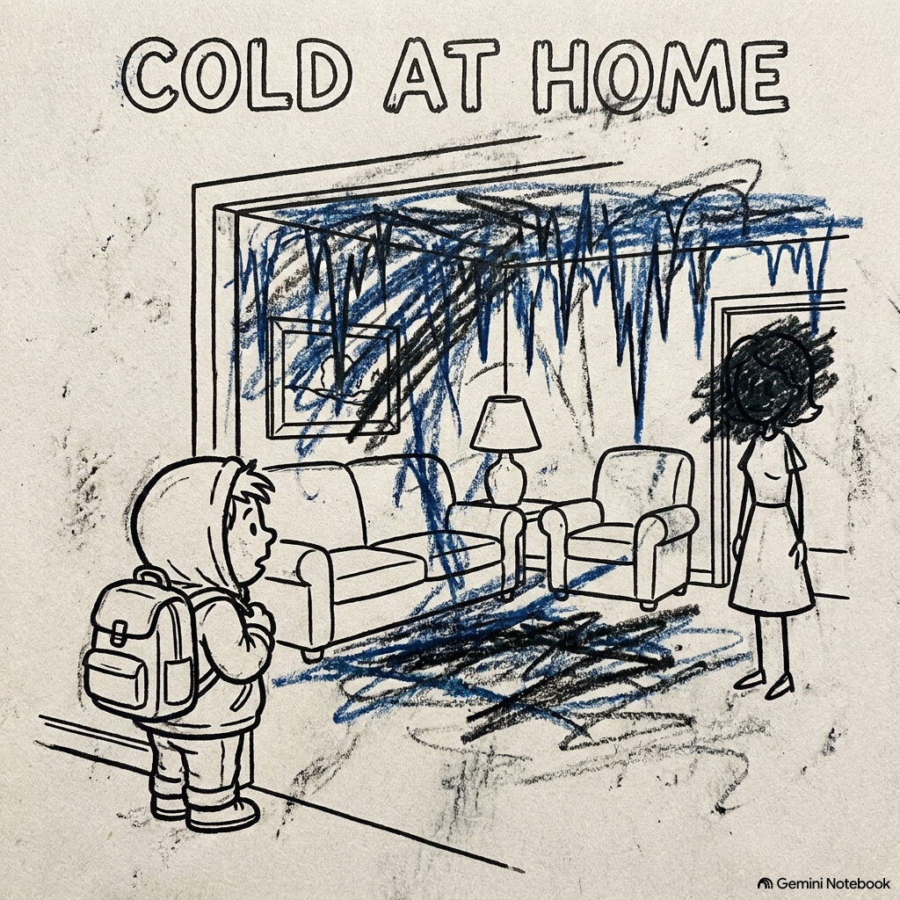

PÁGINA 01 // AZUL PROFUNDO & CELESTEI get home from school and the air is the same,
Yelling and shadows, my daily little game.
You showed me that love is a myth I shouldn't chase,
A fantasy I'll never feel in this cold and empty space.
Your hands are made of ice, your embrace is so cruel.
Cuando cruzo la puerta siempre hace frío adentro, aunque afuera hay sol. Ella dice que está cansada de trabajar todo el día, pero cada vez que entra a la sala parece que está enojada, busco el rincón más escondido para poder esconderme. No le gusta escuchar que en la escuela me fue mal, pero tampoco si me va bien, no le gustan los abrazos, dice que porque soy torpe, sus manos se sienten como hielo que quema. A veces me quedo quieto esperando que no me encuentre cuando grita, yo estando detrás del refrigerador, esperando no me vea.